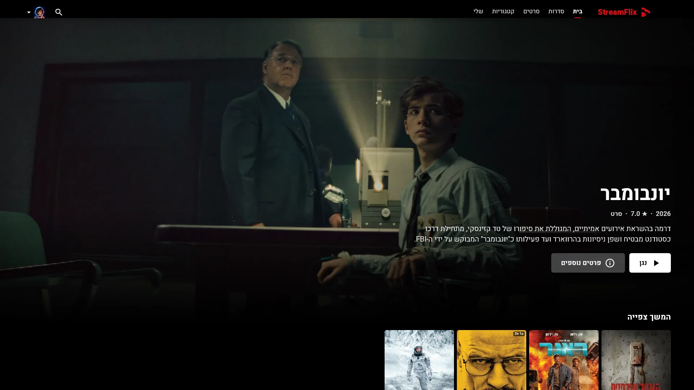
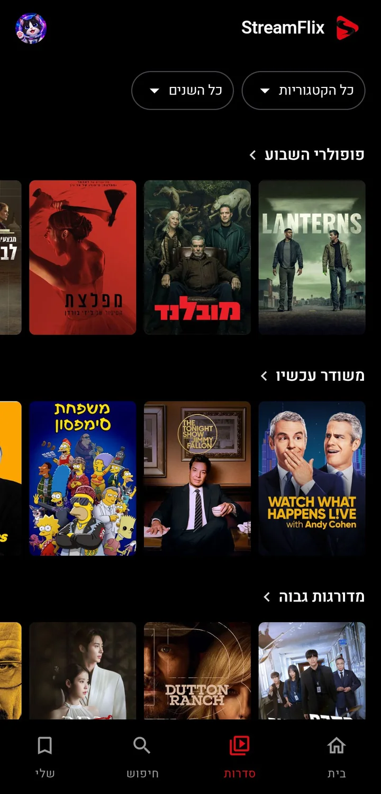

הסרטים שלכם,
בכל מסך.
StreamFlix לאנדרואיד ול-Windows. בעברית, גם בלי אינטרנט, ומסונכרן בין הטלפון למחשב.

- טלפון ומחשב, מסונכרנים
- הפרופילים, "הרשימה שלי" והמשך הצפייה עוברים ביניהם דרך Google Drive שלכם.
- גם בלי אינטרנט
- מורידים סרט או פרק וצופים בו בכל מקום.
- בעברית
- ממשק מימין לשמאל, וכתוביות בעברית שנמצאות לבד.
- בשבילך
- המלצות שלומדות ממה שאתם אוהבים, ועדכונים שמגיעים לבד.

הורדה
Windows
64 ביט · Windows 10/11
הורדת קובץ MSIעזרה בהתקנה
לחיצה כפולה על הקובץ, בלי הרשאות מנהל. אם מופיע "Windows protected your PC": More info ואז Run anyway. בניגון הראשון חומת האש תשאל על גישה לרשת (הסרטים מגיעים מרשת שיתוף קבצים): Allow.
Android
Android 9 ומעלה
הורדת קובץ APK

סריקה מהטלפון
עזרה בהתקנה
כשהטלפון מבקש, מאשרים התקנה ממקור לא ידוע (הגדרות ← אפשר ממקור זה) ולוחצים התקן.